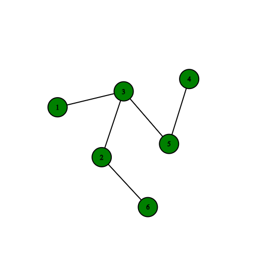
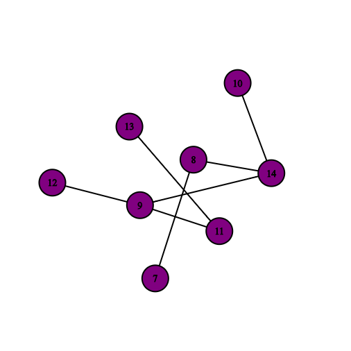
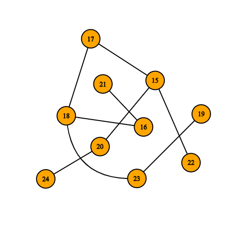
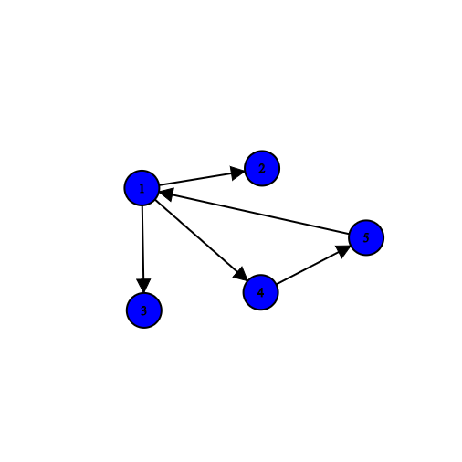
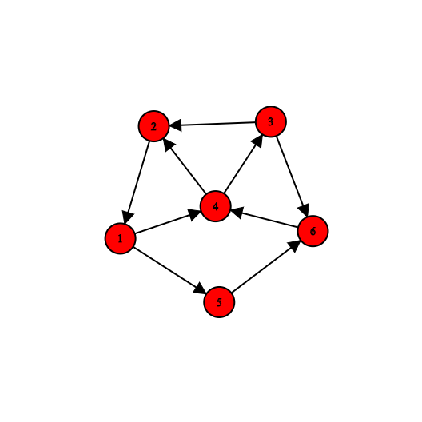

Cuts and Connectivity¶
Connectivity is one of the widely used topics in graph theory that is also utilized in programming. Without further introduction, we will proceed to definitions and theorems to become more familiar with connectivity.
Connectivity
------------
A graph being connected means that there exists a path between every pair of vertices in the graph.
.. figure:: /_static/ConnectedGraph1.png
:width: 50%
:align: center
:alt: Connected Graph
.. figure:: /_static/S37.png
:width: 50%
:align: center
:alt: Connected Graph
.. figure:: /_static/ConnectedGraph2.png
:width: 50%
:align: center
:alt: Connected Graph
Connected Component¶
A connected component is each connected part of a graph. Any graph that has more than one component is called a disconnected graph. For example, in a forest, each tree is a component, and the number of components in the forest is equal to the number of trees in it. In the forest below, each component is shown in a different color.
{kind=link}

{kind=link}

{kind=link}

Connectivity in Directed Graphs¶
In directed graphs, the concept of connectivity becomes more complex compared to undirected graphs. A directed graph is called strongly connected if there is a directed path from every vertex to every other vertex. If we ignore edge directions and the underlying undirected graph is connected, it is called weakly connected.

The following code shows how to check strong connectivity using DFS:
// Check if graph is strongly connected
bool is_strongly_connected() {
// Mark all vertices as unvisited
vector<bool> visited(V, false);
// Perform DFS from vertex 0
DFS(0, visited);
// If any vertex remains unvisited
for (bool v : visited) {
if (!v) return false;
}
// Create transpose graph
Graph transpose = get_transpose();
// Reset visited array
fill(visited.begin(), visited.end(), false);
// Perform DFS on transpose graph
transpose.DFS(0, visited);
// Check if all vertices are visited again
for (bool v : visited) {
if (!v) return false;
}
return true;
}
Strongly Connected Components (SCC) are maximal subgraphs where every vertex is reachable from every other vertex. Kosaraju's algorithm finds SCCs using two passes of DFS:
// Find SCCs using Kosaraju's algorithm
void find_SCCs() {
stack<int> Stack;
vector<bool> visited(V, false);
// First pass: fill stack
for (int v = 0; v < V; v++) {
if (!visited[v]) {
fill_stack(v, visited, Stack);
}
}
// Create transpose graph
Graph transpose = get_transpose();
fill(visited.begin(), visited.end(), false);
// Second pass: process nodes from stack
while (!Stack.empty()) {
int v = Stack.top();
Stack.pop();
if (!visited[v]) {
transpose.DFS(v, visited);
// Output SCC
cout << "SCC found" << endl;
}
}
}
// Helper function for first DFS pass
void fill_stack(int v, vector<bool>& visited, stack<int>& Stack) {
visited[v] = true;
for (auto i = adj[v].begin(); i != adj[v].end(); ++i) {
if (!visited[*i]) {
fill_stack(*i, visited, Stack);
}
}
Stack.push(v); // push vertex after processing all neighbors
}
Weakly Connected¶
If we replace the directed edges of a directed graph with undirected edges and the resulting graph is connected, we say the original graph (with directed edges) is weakly connected.
{kind=link}

Strongly Connected¶
A directed graph is called strongly connected if between every pair of vertices u and v, there exists a directed path from u to v and a directed path from v to u.
To solve \(2-SAT\) problems, existing algorithms for finding strongly connected components are used.
{kind=link}

Strong Component¶
Strong components are the maximal strongly connected subgraphs of the graph.
Cuts¶
def get_cuts(graph):
# Get graph cuts
cuts = []
for edge in graph.edges:
cuts.append({edge})
return cuts

A cut in a graph refers to a partition of the graph's vertices into two disjoint subsets. More precisely, a cut \((S,T)\) divides the graph such that \(S\) and \(T\) are non-empty sets satisfying \(S \\cup T = V\) and \(S \\cap T = \\emptyset\). The cut-set (or simply "cut") consists of all edges connecting vertices between \(S\) and \(T\).
Note: For a valid cut, both subsets \(S\) and \(T\) must contain at least one vertex. A cut where one subset is empty doesn't constitute a valid cut.
Cut Vertex¶
A vertex is called a cut vertex if removing it from the graph increases the number of connected components.
Cut Edge¶
A cut edge is an edge whose removal increases the number of connected components in the graph. It is also referred to as a bridge.
An edge uv that lies on a cycle in the graph cannot be a cut edge, because removing it will leave the vertices u and v still connected via a path. Thus, the number of components in the graph does not increase.
This book is made by The Shaazzz contributors.
It is publicly available with cc-by-sa license.
Last updated at آوریل 19, 2025.
Rendered by Sphinx (4.3.2) and Minoo theme (Beta 0.9.7).